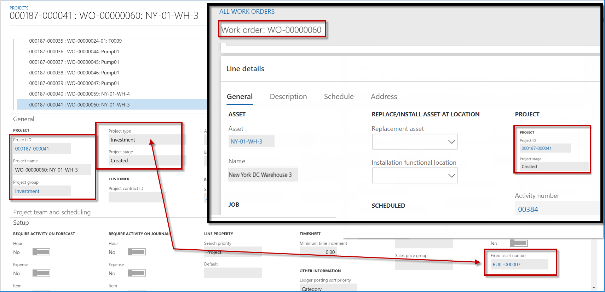
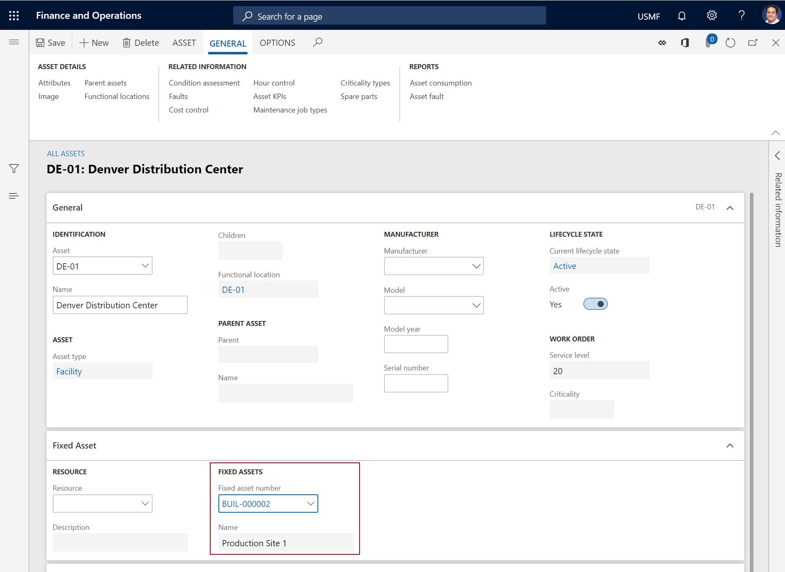
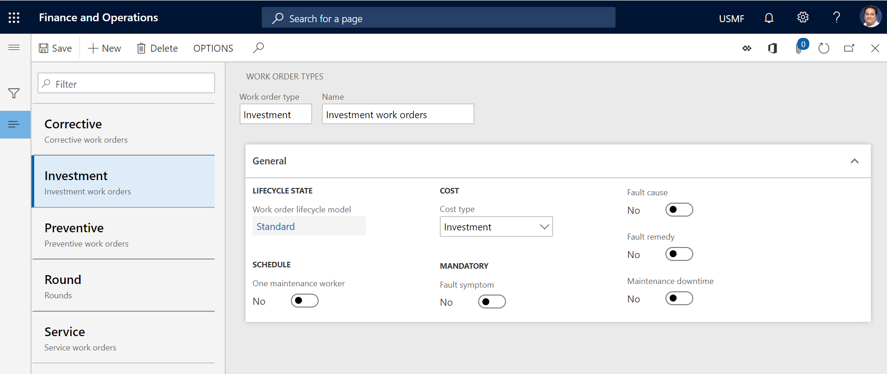
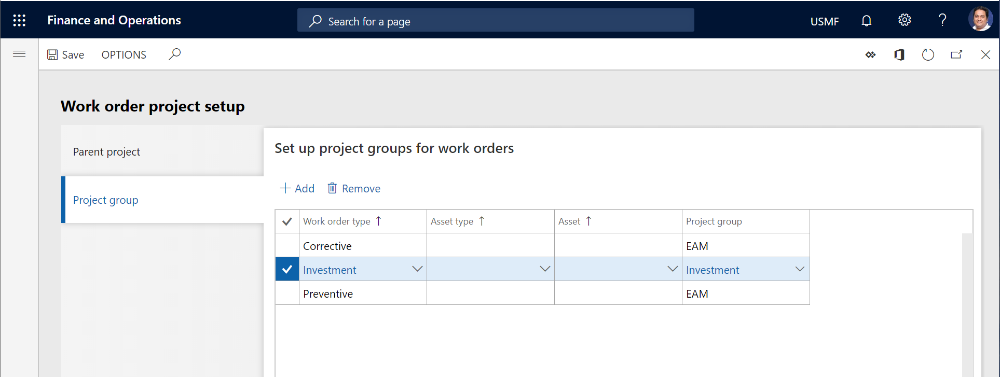
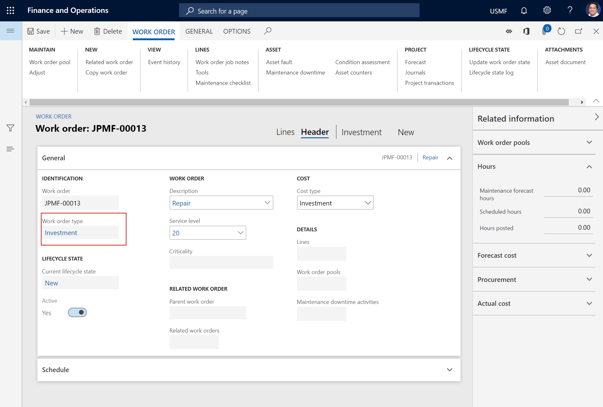
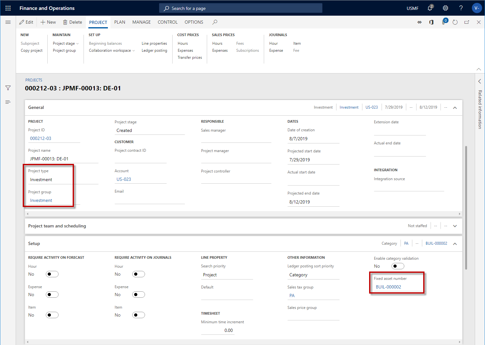

Fertigungsaufträge und Abschreibungen
Important
Dynamics 365 for Finance and Operations hat sich zu speziell entwickelten Anwendungen entwickelt, mit denen Sie bestimmte Geschäftsfunktionen verwalten können. Weitere Informationen zu diesen Änderungen finden Sie im Dynamics 365-Lizenzierungshandbuch.
In der Anlagenbuchhaltung können Anlagen mit Anlagen verknüpft sein, und Sie können Arbeitsaufträge für diese Anlagen anlegen. Wenn Sie diese Funktionalität nutzen, können Sie sich im Modul Projektverwaltung und Abrechnung und im Modul Anlage in Microsoft Dynamics 365 for Finance and Operations einen vollständigen Überblick über die Anlage, die zugehörigen Investitionsprojekte und die auf den Investitionsprojekten erfassten Kosten verschaffen.
Note
Das Feld Anlagennummer wird auf dem Arbeitsauftragsprojekt nur festgelegt, wenn als Projektart auf dem Arbeitsauftragsprojekt der Typ Investition ausgewählt ist.
Die folgende Abbildung veranschaulicht die Beziehung zwischen einem Investitionsprojekt im Modul Projektverwaltung und Abrechnung und einem Arbeitsauftragseinzelvorgangsprojekt.

Die folgende Vorgehensweise beschreibt die Beziehung zwischen Anlagen, Arbeitsaufträgen, Arbeitsauftragsprojekten und Anlagen.
- Sie erstellen eine Anlage, die Sie einer Anlage zuordnen.

- Wenn Sie Arbeitsauftragsarten einrichten auf der Seite Arbeitsauftragstypen (Anlagenverwaltung > Einrichtung > Arbeitsaufträge > Arbeitsauftragstypen), legen Sie eine Arbeitsauftragsart für die Investitionsabwicklung an. Siehe auch Arbeitsauftragsarten.

- Wenn Sie Projektgruppen für Arbeitsaufträge auf der Registerkarte Projektgruppe der Seite Arbeitsauftrags-Projekteinstellungen (Anlagenverwaltung > Einrichtung > Arbeitsaufträge > Projekteinrichtung) einrichten, stellen Sie eine Beziehung zwischen der für Investitionen verwendeten Arbeitsauftragsart und der Projektgruppe her, die auf der Seite Projektgruppen im Modul Projektverwaltung und -verrechnung (Projektverwaltung und -verrechnung > Einrichtung > Buchung > Projektgruppen) erstellt wurde.

Wenn Sie einen Arbeitsauftrag anlegen, der sich auf eine Anlagen bezieht, wählen Sie die Arbeitsauftragsart, die für die Abwicklung von Investitionen verwendet wird, z.B. Investition.
Wenn der Arbeitsauftrag angelegt wird, wird die zugehörige Arbeitsauftragsart auf der Seite Alle Arbeitsaufträge angezeigt.

- Wenn der Arbeitsauftrag erstellt wird, wird das Projekt, das dem Arbeitsauftrag zugeordnet ist, auf der Seite Alle Projekte im Modul Projektverwaltung und -verrechnung erstellt (Projektverwaltung und -verrechnung > Projekte > Alle Projekte). Um projektbezogene Informationen anzuzeigen, wählen Sie den Link im Feld Projektkennung auf der Registerkarte Allgemein auf dem Inforegister Positionsdetails in der Detailansicht der Seite Alle Arbeitsaufträge im Modul Anlagenverwaltung aus (Anlagenverwaltung > Allgemein > Arbeitsaufträge > Alle Arbeitsaufträge).

- Um einen Überblick der Projekte anzuzeigen, die einer Anlage zugeordnet sind, wählen Sie Anlagen > Anlagen > Anlagen und dann im Feld Anlagennummer den Link für die Anlage aus, um die Detailansicht zu öffnen. Erweitern Sie den Bereich Zugehörige Informationen auf der rechten Seite der Seite, und wählen Sie das Inforegister Zugeordnete Projekte aus.